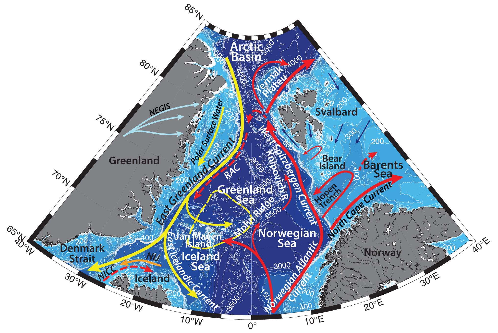

Schematic water circulation patterns and geographical place names in the Jan Mayen Island region. Adopted from Wang et al., 2020; Ozhigin et al.,2000; Bourke et al., 1992; Rudels et al., 2002; McClimans et al., 2012; Brakstad et al., 2019. Dashed line marks the studied region.
Jan Mayen island is a volcanic island in the Arctic Ocean, 55 km long and 373 km2 in area, partly covered by glaciers (an area of 114.2 km2). Hydrographic structure of the surrounding waters is mainly determined by the structure and dynamics of the East Greenland Current and inflow of the Atlantic Water into the Nordic Seas. Nordic Seas are an important region of winter deep water ventilation in the North Atlantic, distributing heat and salt in the interior of the ocean (e.g. Rudels et al., 1989). Geodynamic processes, associated with the interaction between the Jan Mayen Fracture Zone (JMFZ) and the slowly spreading Kolbeinsey and Mohns Ridges, as well as hydrothermal activity, influence hydrography and ecosystem of the region as well. The proximity to the Greenland ice sheet promotes the cooling of the sea surface followed by either the formation of deep convection mixing of the underlying water, or intense ice formation on the surface, depending on the dominant waters of the upper layer in the central part of the sea.
General circulation pattern in the Nordic Seas is cyclonic, comprised of northward flowing Atlantic Water in the east and southward flowing East Greenland Current in the west. Two separate largescale gyres – Greenland and Iceland – are known to exist in Greenland and Iceland Seas respectively.
Atlantic water (AW) flows into the Nordic Seas through the Faeroe–Shetland Strait, over the Faeroe–Iceland Ridge and through the Denmark Strait around Iceland. This water is cooled significantly on its way to the Arctic Basin and the Barents Sea due to heat loss to the atmosphere and mixing with the surrounding water: e.g., from 9°C and 35.3 psu in the Faeroe–Shetland Strait to 1–3°C and 35.0 psu in the Fram Strait. This transformation happens, for example, in the zone of influence of the East-Icelandic Current, or with cold and fresh Polar Surface and cold and salty Polar Deep Water in the region of Fram Strait. AW is the important source of heat and salt for the Arctic Ocean, as well as Atlantic species (McClimans et al., 2012), it contributes sufficiently to the formation of the upper layer in the central part of the Greenland Sea. According to Carmack and Aagaard (1973), 90% of the water mass volume in this layer comprises AW while polar water (PW) comprises only 1–2% of the upper layer volume. Since the late 1980s, the temperatures of the inflowing into the Norwegian and Greenland Seas AW has increased, leading to the warming of surface and intermediate layer of the Greenland Gyre (McClimans et al., 2012).
West Spitzbergen Current is about 100 km wide, and predominantly steered by topography, confined to the continental slope of the Barents Sea (Bourke et al. 1988). It can reach up to 35 cm/s at the surface (Boyd and D'Asaro 1994; Fahrbach et al. 2001; Saloranta and Svendsen 2001). At approximately 79°N part of the West Spitzbergen Current turns to the east along the northern coast of Svalbard (e.g. Muench et al., 1992), while another branch continues northwards around the Yermak Plateau (Yermak Branch). From there the Yermak Branch either turns eastwards and eventually joins the main branch at the continental slope, or curves cyclonically westward and then southward, joining the EGC (Bourke et al. 1988; Gascard et al. 1995; Saloranta and Haugan 2001). It is known as Return Atlantic Current (RAC; Paquette et al. 1985; Aagaard and Coachman 1968; Bourke et al. 1988), carrying Re-circulating Atlantic Water (RAW; e.g. Rudels et al., 2002), and is advected in the flow southward along the eastern edge of the EGC to a depth of about 300 m. East Greenland Polar Front is formed between the RAC and EGC, showing sharp temperature and salinity gradients (Bourke et al. 1988).
East Greenland Current is the main conduit for waters exiting the Arctic Ocean. EGC flows from the Fram Strait southwards to the Cape Farewell and carries sea ice, as well as cold and fresh Polar Surface Water (-1.9<T<0°C), Atlantic Water both recirculated in the Basin (also known as Arctic Atlantic Water; T<~1°C; e.g. Rudels et al., 2002) and the Return Atlantic Water from the Fram Strait, and cold Polar Deep Water out from the Arctic Basin (e.g. Rudels et al., 2002). On its way along the Greenland slope the EGC interacts with waters from the Greenland and Iceland Seas and incorporates additional intermediate water masses. Freshwater input from the EGC is the dominant source of freshwater in the Greenland Sea.
Part of the East Greenland Current separates from the slope at the Jan Mayen Fracture Zone and enters the Greenland Sea, flowing in the Jan Mayen Current (JMC) toward Jan Mayen and the Mohn Ridge. According to Bourke et al. (1992) this flow mainly involves the upper, less saline Polar Surface Water (PSW), while the deeper lying Re-circulating Atlantic Water (RAW) only appears to make a short incursion into the Greenland Sea and then returns to and crosses the Jan Mayen Fracture Zone in the East Greenland Current. RAW was observed to the east and south of the Jan Mayen, confining the Polar Surface Water (PSW) and its low temperature core westwards to above the shelf and slope.
The Nordic Seas is a key region of winter convection and subsequent dense deep water formation (e.g. Brakstad et al., 2019), which is later feeding the deepest part of Atlantic meridional overturning circulation (AMOC), spilling across the troughs in the Greenland–Scotland Ridge (AMOC; e.g. Gebbie and Huybers 2010). The largest overflow plume of dense water flows through the Denmark Strait from the Nordic Seas on the western side of Iceland, and is known as the Denmark Strait Overflow Water (DSOW; e.g., Jochumsen et al. 2017). Nearly one-third of DSOW is the dense water (Jonsson and Valdimarsson, 2004), originated from the northwestern part of the Iceland Sea, where the deepest and densest convection occurs, as well as from farther north in the Greenland Sea (Messias et al. 2008; Vage et al., 2015; Pickart et al. 2017). This water has a potential density anomaly larger than 28.03 kg m−3 (Vage et al. 2011) and is carried by the North Icelandic Jet (NIJ; Jonsson and Valdimarsson, 2004). The EGC accounts for the remaining part of the DSOW (Harden et al. 2016).
Convection in the Greenland Sea contributes water to the overflows both east and west of Iceland, in particular for waters denser than 28.03 kg m−3, although the preferred pathways of the dense water are not fully known (Brakstad et al., 2019). On the eastern side of Iceland, the overflow through the Faeroe Bank Channel (FBC), is comprised from intermediate and deep water masses from the Nordic Seas, as well as upper Polar Deep Water formed in the Arctic Ocean (Jeansson et al., 2017).
The convective activity in the Greenland Sea has changed extensively over the past decades. Early studies document wintertime convection reaching almost the bottom of the sea (e.g. down to 3500 m in the center of the Greenland Sea in 1971), and formation of the very cold and dense Greenland Sea Deep Water (GSDW; e.g. Carmack and Aagaard 1973; Aagaard et al. 1985b; Brakstad et al., 2019). But since the late 1970s, convection has only been observed to intermediate (<2000 m) depths, forming the slightly warmer and less dense Greenland Sea Arctic Intermediate Water (GSAIW; e.g. Meincke et al. 1992; Latarius and Quadfasel 2010; Jeansson et al. 2017). This can be due to a combination of factors, including decreased cyclonic wind stress curl and reduced sea ice formation resulting in less brine release (e.g. Meincke et al., 1992). Since the end of the 1970s the magnitude of the atmospheric heat fluxes over the Greenland Sea have also decreased by 20% (Moore et al., 2015; Brakstad et al., 2019).
Brakstad with coauthors (2019) suggest, that if future convection is reduced, either as a result of decreased heat fluxes (e.g., Moore et al. 2015) or because of enhanced near-surface freshwater content (e.g., from increased ice melt), it could impact the overflows both east and west of Iceland and limit the supply of the densest water to the lower limb of the AMOC (Brakstad et al., 2019). However, one should remember, that the depth of convection also depends on the hydrographic conditions prior to the convective season, e.g. increased salinity in the northward-propagating AW, meltwater from the glaciers, etc. Gascard with coauthors have found, that submesoscale antycyclonic eddies substantially contribute to the input of Atlantic and polar waters to depths greater than 500 m in the central Greenland Sea. They are formed in winter and comprised of warm and salty AW and cold and fresh PSW (Gascard et al., 2002).